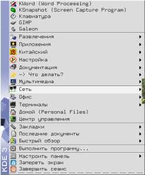
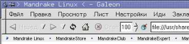
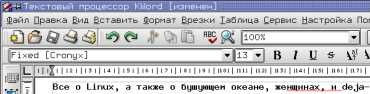
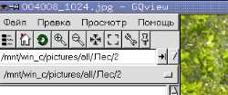

Рассказывать сегодня о Linux ? все равно, что капнуть из
пипетки в бушующий океан, который в результате глобального
накала страстей медленно, но верно растекается до рабочих мест
простых пользователей.
Последнее время о Linux пишется едва ли не больше, чем про
Windows, что конечно заставляет многих, туманно представляющих
себе операционные системы, написанные вдали от Редмонда,
задуматься о приобщении к этому загадочному миру. Я уже писал
в журнале, что всегда был доволен Windows XP (не путайте с
9х-линейкой), и поэтому дистрибутивы Linux (Red Hat 7.2 и
Mandrake 9.0) пылились у меня на подоконнике. Переломным
моментом стал звонок отца; он поставил cебе Mandrake 9.0 и
высказался о нем строго положительно: мое любопытство взяло
вверх.
Признаться честно, UNIX системы никогда не блистали
скоростью. В середине 80-х популярная OS SYSTEM V, являющаяся
UNIX-системой для СМ4 (отечественная машина на процессоре
PDP-11 размером со шкаф) была намного медленней, чем родная
для той машины OS RAFOS. И эта тенденция сохранилась и по сей
день: ОС, написанная специально для какой-либо архитектуры,
работает быстрее любой универсальной POSIX-совместимой
системы. Но UNIX живет, развивается и не думает умирать.
Сегодня он многим известен массой дистрибутивов Linux. В чем
же секрет?
Linux ? это не просто другая операционная система ? это
другое мировозрение, другая система ценностей. Если Windows ?
красивый рождественский подарок, то Linux ? конструктор, из
которого можно собрать все что пожелает душа. Специально для
женщин: большинство из вас покупают одежду на рынках, в
магазинах, бутиках, но есть небольшой процент, кто заказывает
платья/блузы/брюки/др. в ателье или щьет сам, не доверяя
серийным фабричным изделиям. Из куска ткани (дистрибутива)
теоретически можно сшить как нелепое убожество, в котором даже
перед мужем стыдно показаться, так и нечто прекрасное и
эстетичное, от которого к вашим ногам падут все мужчины в
пределах прямой видимости. Купленное в бутике платье, скорее
всего, к лицу лишь 90/60/90 красотке (собранной из
современных комплектующих), в то время как сшитое умелыми
руками будет к лицу любой владелице, в независимости от
возраста и природных данных. Linux создается для тех, кто
хочет творить, кто хочет быть непохожим на других, кому важен
сам процесс творчества.
Когда я работаю в Linux (сейчас набираю в KWord-е текст +
слушаю музыку XMMS-ом), то меня не покидает ощущение дежавю,
словно это все уже было когда-то. А было это в начале 90-х, ZX
Spectrum, время тотальной сборки компьютеров вручную, когда не
то, что программная часть, но и аппаратная собиралась как
конструктор. Как-то в одном из номеров электронного журнала
ZX-Format был опрос на тему Знаете ли вы ассемблер?,
ответ был поразителен ? 50% ответили да. Медленно
вдумайтесь в эту цифру: каждый второй знал ассемблер той
машины, за которой работал (в отличие от языков высокого
уровня, ассемблер для каждой линейки процессоров свой). Вы
знаете ассемблер x86? Я ? нет (учил когда-то в университете,
но кто помнит уже через год то, чему там учат). Время ZX было
временем настоящего творчества, каждый считал своим долгом
хотя бы написать загрузчик для любимой игрушки. Не уметь
программировать на ZX считалось зазорным, а программирование
было обыденностью. Подобное мышление можно спроецировать и на
современный Linux. Большинство пользователей этой ОС, так или
иначе, знакомы с программированием, только вместо ассемблера
выступает язык Си. Подавляющее большинство линуксоидов ? это
компьютерщики по своей натуре, люди, увлеченные высокими
технологиями. Вряд ли можно усадить за Linux, например,
бухгалтера, который использует компьютер только по работе и
чаще всего испытывает к нему стойкое отвращение.
Когда вы читаете из журнала в журнал полярные статьи о
Linux, то это всего лишь означает, что их пишут абсолютно
разные люди. Человек технологичный, ищущий простейший путь к
результату, какой-либо выгоде, вряд ли будет работать в Linux;
у него нет времени на творчество. Напротив, человек ищущий,
испытывающий наслаждение не только от результата, но и он
процесса его достижения, будет чувствовать себя как рыба в
воде, работая в Linux. Windows ему просто скучен. Что можно
сотворить там, где все уже придумано? Нет, я немного не точно
выразился. Зачем творить там, где за тебя все уже
сотворил Microsoft? Мелкие программки сторонних
производителей, которыми мы нашпиговываем винчестер не в счет,
это как орешки наверху торта ? приятно, но не существенно.
Windows можно ненавидеть, но использовать (что, собственно,
многие делают), он холоден, флегматичен в работе (я имею в
виду NT-ядро; 9x регулярно осыпалась так, что становилось
очень весело), а Linux нужно любить. Иначе вы с ним не
уживетесь, он, как женщина, не терпит холодного отношения.
Linux любит понимание.
Когда я поставил в первый раз Mandrake Linux 9.0, то понял
? как много мне еще предстоит понять! Выбор в пользу Mandrake
был сделан по нескольким причинам, но основная была банальна
до неприличия ? это был самый свежий дистрибутив, который у
меня имелся, сентябрь 2002 года. Лишь через неделю, немного
разобравшись с этим капризным существом, я решил поискать ему
применения, помимо бесконечного настраивания.
Сперва, несколько общих слов. Меня приятно удивил тот факт,
что для решения практически любой задачи в Linux есть
несколько различный программ. Помниться, в середине 90-ых мы
поражались тому, что различные простейшие операции в Windows
95 можно было решать по-разному. Например, запустить файл
можно было из: Проводника, Главного меню, пункта меню
выполнить, а также из DOS-сессии. В MS DOS было все
гораздо проще ? Norton Commander. Разнообразие будоражило
душу, это был явный технологический прорыв. Разнообразие,
применимое к Linux, не является каким-то прорывом, просто это
следствие отсутствия монополии Microsoft на рынке ПО для
Linux, я бы даже сказал, следствие отсутствия фирмы Microsoft
как таковой в жизни Linux. Теперь обо всем по порядку.

1. Графические оболочки. Даже
любой чайник в компьютерах скажет вам, что Linux красивей.
Красота Linux кроется в разнообразии оконных менеджеров, в
широте настроек. Windows XP также красив, но у всех версий
Windows есть любопытная особенность ? они во многом копируют
интерфейсы текущей на тот момент версии KDE. Причем повторяя
красоту, Microsoft совершенно не заботится о мощности
конфигурирования. Ситуация дошла до анекдотической в случае c
темами для XP. Темы нельзя просто так создавать, они должны
быть подписаны в Microsoft (что стоит денег для создателей) и
только после этого они будут работать в ХР. Получается смешная
ситуация (когда слишком много трагедии, начинается комедия),
когда авторы тем должны сами платить за то, что создают
программы для Windows XP. Конечно, мне возразят, что есть
crack-и для подобных случаев, но от этого не легче, так как
большинство дизайнеров предпочитает работать легально и просто
не связываются с Microsoft. Количество тем из-за этого очень
невелико и большинство из них, к сожалению, полное убожество.
Но вернемся к нашим пингвинам. С темами в KDE и Gnоme проблем
нет, их выбор в дистрибутиве невелик, но весьма симпатичен.
Скажу так - все, что вы можете сделать с интерфейсом в Windows
XP, у вас получится и в Linux, например, иметь список часто
запускаемых программ, скины на всех элементах и многое другое.
Лучше я скажу о том, чего нет в Windows XP. Я не знаю, как это
распределить по важности, поэтому буду писать в порядке
собственного обнаружения.
1.1. Значки, которые, кстати, имеют произвольный исходный
размер, на рабочем столе можно еще и масштабировать.
1.2. Функции клавиш мыши можно программировать стандартными
средствами.
1.3. Гибкая настройка русификации; можно использовать не
только 3 стандартных варианта, как в Windows. Хотя Windows +
Punto Switcher, на мой взгляд, удобней, так как автоматически
переключает раскладку. Русскую программу автоматического
переключения языков я в интернете не нашел. Я не пишу, что ее
нет, просто не нашел.
1.4. Виртуальные рабочие столы. Опять же, в Windows для
этого нужна сторонняя программа, например, Altdesk 1.5.1. Но
она платная.
1.5. На панели можно размещать множество элементов; список
задач является лишь малой частью того, что там можно
прописать.
1.6. В зависимости от мощности своей машины, пользователь
может выбрать любой оконный менеджер: KDE, Gnome,
WindowsMaker, IceWM и др. (в 9х был лишь один стоящий
альтернативный вариант ? Aston).
1.7. Следствие предыдущего пункта. В Linux-е нет единого
стандарта на интерфейс, поэтому программы так непохожи друг на
друга, чего не скажешь о Windows; там большинство программ
имеет MSOffice-образный интерфейс (это не потому, что все
хотят быть похожими на него, а потому что большинство
использует стандартные API-функции).
Конечно, в графике Linux не без глюков. Например, в KDE
криво работает переключение языков. Если оставить все по
умолчанию, то переключение работает, но индикатора на экране
нет, а если включить этот индикатор, то переключение можно
осуществлять только мышкой. В Gnome все работает отлично,
индикатор ставится без проблем.
2. Интернет. Я сразу скажу, что рассматривать как
сервер Linux не буду, потому что, во-первых, большинство
использует ПК для персональных нужд, а не для серверных, а
во-вторых, я просто это не проверял еще пока (сам я
администрирую Novell-сеть; менять не собираюсь).
2.1. Итак, для работы в интернете необходим, в первую
очередь, браузер. Mandrake Linux 9.0 оснащен сразу
вереницей браузеров: известная многим осям Mozilla 1.1, чисто
линуксовый браузер на движке Gecko ? Galeon 1.2.5, а также
KDE-шный Conqueror и гномовский Nautilus. Про Mozilla я уже
писал в 336 номере, так что заострять внимание не буду.
Прекрасный браузер, который я (и не только) искренне считаю
превосходящим IE 6.0 по интерфейсу(с prefbar-ом) и по
функциональности. Почитайте статью 99 причин
использовать Mozilla, которая открывается по ссылке
Лучший браузер на сайте http://www.openoffice.ru/.
Это перевод англоязычной статьи 101 возможность Mozilla,
отсутствующая в IE.

Galeon мне также понравился, я бы отметил его очень
продуманный интерфейс. Mozilla может в этом плане с ним
сравниться только будучи обвешанной плагинами. По скорости
субъективно они мне показались равными, так грузятся
приблизительно одно время (секунд 5-10), а одинаковый движок
обуславливает их идентичное поведение по время web-серфинга.
Мне, как пользователю Windows, было привычней работать в
Mozilla, поэтому я бы ее условно поставил на первое место, но
это не значит, что Galeon хуже. Просто, он менее привычен.
Conqueror и Nautilus ? это, по правде говоря, что-то среднее
между виндовым Проводником и реально интернет-браузером. То
есть, эти программы позволяют осуществлять навигацию, как по
каталогам вашего винчестера, так и по бескрайним просторам
всемирной сети. Вследствие этого, они очень тяжелы и, честно
говоря, для web-серфинга неудобны. Хотя есть люди, которым
нравится Conqueror и как средство захода в зону интернета.
2.2 Почтовая программа, новости. Такого почтовика,
как The Bat!, конечно, в Linux нет, но есть довольно приятные
- Mozilla Mail из состава Mozilla и KMail из состава KOffice.
Mozilla Mail всем хорош, он даже смайлики рисует в
html-письмах просто прелестные , но у него есть один
большой недостаток. Вернее, я в таких случаях пишу не смог
найти. Так вот, Mozilla Mail, по результатам моих поисков,
поддерживает лишь один SMTP сервер (POP серверов может быть
сколько угодно). Это значит, что отсылать почту можно будет
только через один ящик, хотя принимать можно с произвольного
количества адресов. В KMail такого ограничения нет, но есть
свой маленький загон (ошибкой это назвать нельзя, видимо,
программисты так прикалываются). KMail работает только с одним
активным SMTP сервером, и для отсылки почты через другой
сервер приходится лезть в меню, искать место, где они
настраиваются и там указывать активный сервер. Вроде, лишние
3-4 секунды, а все равно достает, ведь The Bat! все это может
делать. Не дразните меня отсталым, но я уже 4 года как не
видел Outlook Express, поэтому сравнить с ним просто не
могу.
2.3. Остальное. Звонилка в Linux KPPP мне очень
понравилась, в ней можно тонко настроить модем, она очень
четко отслеживает попытки прервать соединение (набор номера,
например). В Windows я пользуюсь древним E-Type dialer (1998
год), и он это делает крайне плохо (другие тоже). Например, вы
набрали номер и тут поняли, что звоните не тому провайдеру.
Надо прервать соединение. KPPP это сделает моментально, а
диалеры в Windows будут ждать, пока модемы не снюхаются. А это
дополнительные 3-5 секунд. Чатами, ICQ я не пользуюсь, но на
глаз в дистрибутиве Mandrake Linux 9.0 есть несколько программ
для подобных занятий, значит, как минимум, этим вы сможете
воспользоваться (удобство ? второй вопрос). И, наконец,
программы для укачки файлов. В Windows встроенные средства
практически отсутствуют, они убоги до неприличия, зато есть
множество хороших программ сторонних производителей. Например,
Flashget. Единственный стоящий аналог из найденного мной ? это
FGet. Простенький, конечно, но качает. Мое мнение, что
сторонние программы для Windows интересней.
3. Офисные программы. Тут, к сожалению, Linux явно
проигрывает Windows. OpenOffice 1.0.1 работает, как ни
странно, медленней, чем MS Office, несмотря на намного меньший
объем дисковой памяти. Особенно удручает время загрузки. Если
в случае в браузерами лишние 3-4 секунды во время загрузки не
играют важной роли, то 10-15 секунд загрузки OpenOffice Writer
против 1-3 секунды WordXP (и это при отключенной автозагрузке
компонентов офиса в память!) ? не дело. Лично я уже привык не
тратить время на ожидание загрузки программы, в которой буду
подготавливать офисный документ. Интерфейс OpenOffice
поразительно схож с аналогом от Microsoft. Функциональная
полнота OpenOffice намного беднее, чем у варианта из Редмонда,
хотя при внимательном рассмотрении оказывается, что
большинство наворотов WordXP мы просто не используем, даже с
учетом того пишем сложные документы. Часто ли вы пользуетесь
средствами рисования в MS Word-е? Максимум ? это нарисовать
какую-нибудь схемку из кружков-прямоугольников, и именно это
умеет OpenOffice Writer! А для более сложного рисования,
где-то на уровне между MS Word и Corel Draw в OpenOffice есть
другая программа - OpenOffice Draw. OpenOffice поддерживает
.doc формат WordXP (помимо собственного .swx),
но лично я бы сохранял документы .rtf. На всякий
случай, мало ли где придется их потом править? Остальные
офисные пакеты произвели на меня меньшее впечатление, даже
многими расхваливаемый в этом журнале KOffice.

Он грузится очень быстро, единственный в Linux, кто
проверяет русскую орфографию, расставляет переносы. Но ни
.doc ни .rtf не понимает. Это клиника. В смысле,
полная изоляция от мира Windows. Сегодня так нельзя, надо
хотябы через .rtf работать с документами MS Word. А
лучше напрямую понимать формат .doc, что делает только
OpenOffice. Просто для справки: OpenOffice 1.0.1 ? это ветка
развития StarOffice 5.2.
4. Работа с графикой. Безнадежное отставание Linux.
Gimp 1.2.1 ? неплохой редактор, кстати, имеющий сборку и для
win32, но он явно уступает монстрам графики для Windows. Мой
любимый редактор для Windows, не смейтесь, это Photoimpact
6.0. Photoshop-ы у меня глючат с русской кодировкой в XP (для
9х были патчи), а монстры от Corel меня не устраивают своей
скоростью и обилием абсолютно ненужных функций. Так вот в
Gimp-е я не нашел много, к чему просто привык в Photoshop,
например, выделить фрагмент изображения и одним действием и
обрезать картинку до границ выделения. Никак. Сказать, что
интерфейс GIMP-а необычный, значит, ничего не сказать. Все
управление сосредоточено в правой кнопке мыши, а окно
приложения отсутствует напрочь. Вся работа происходит в окне
изображения, не имеющего ни меню, ни заголовка. Я долго
привыкал (еще работая в Windows 98), но когда освоился, то
отметил, что интерфейс очень удобен, глаза не разбегаются по
сотням менюшек и кнопочек, а работают с одним большим
меню.
5. Мультимедиа. Все бы хорошо, но для написания
музыки ничего хорошего я не нашел. В Windows пользовался
Gigastudio 2.0 (+куча СD с сэмплами) + Cakewalk 9.0. Во
времена MS DOS пользовался Impulse Tracker 2.xx, который потом
перерос в Mod Tracker для Windows.
5.1. Звуковой проигрыватель. Тут я особо не мучался
и просто отметил для себя, что Winamp 2.хх и XMMS
приблизительно равны по фичности/удобству.
5.2.Видео. Если говорить о формальном
воспроизведении видео, то и в Linux и в Windows смотреть его
можно. Но линуксовый Xine меня просто убил своим неудобством.
Чтобы открыть файл, надо пол минуты, как минимум, ползать по
меню, в то время, как открытие видео в Windows ? это (если не
настроен, конечно, запуск по клику) перетаскивание видео файла
на окно любого проигрывателя. Xine такой просто способ
открытия видео файлов не понимает.

5.3. Просмотр картинок. Тут
программ ? великое множество, и большинство из них работают из
консоли. Поиски привели меня лишь к одной по-настоящему
удобной и красивой программе - GQview 1.0.2. Скорость открытия
картинок меня поразила, она была на уровне ACDSee. Замечу, что
я не имею в виду скорость загрузки программы и вообще
какие-либо ее системные требования, речь идет о скорости
открытия картинок и о скорости их скроллирования в случае
превышения размеров рабочего стола. В Windows в этом плане
единоличный лидер ACDSee (IRFan чуть ли не на порядок
медленней).
6. Запись CD, архивирование. У меня были большие
опасения насчет возможности работы с CD-RW, но они, к счастью,
не оправдались ? в состав Mandrake Linux 9.0 входит неплохая
программа для записи CD дисков CD Toaster 1.0. Она не одинока
в своем роде, но именно CD Toaster мне сразу понравился своей
похожестью сразу на Nero Burning ROM и WinOnCD, разобраться в
ней было очень просто. Я пробовал перезаписать 4 и 10
скоростную RW болванку, на одной сделал несколько сессий, все
работает. Хотя, программы для пакетной записи я не нашел, но в
Windows XP я ее не использую, так что никакого разочарования
не было. Работа с линуксовыми архивами безупречна, из
архиваторов для Windows я обнаружил, что не поддерживается
RAR. Для ZIP и ARC есть специальные программы в
дистрибутиве.
Можно продолжать 7, 8, 9, например, рассказать о командной
оболочке bash. В MS DOS эти функции выполнял command.com, на
фоне которого работа с синтаксисом bash кажется просто
сказкой. Я никогда не думал, что работать с командной строкой
будет так удобно. На этом фоне единственный консольный
файл-менеджер Midnight Commander смотрится блекло, и во многих
случаях командная строка оказывается спокойнее.
Linux никогда не будет тем, чем является сейчас Windows ?
операционной системой для всех. Потому что Linux пишут
эникейщики (С. Голубицкий) для таких же, как и они. Его
развитие сейчас пытается двигаться в сторону доступности,
простоты конфигурирования, но это вызывает подобные эффекты.
Интернационализация дистрибутивов, попытка стандартизации
инсталляционных пакетов (Debian), привела к огромным
излишествам. Но все равно для многих остается загадкой, почему
все операционные системы рождаются и умирают, а UNIX живет и
постоянно развивается.
Когда вас достанет уныние и тоска рутинной работы в
Windows, попробуйте это чудо под названием Linux. Может, и не
ради выгоды и ускорения работы, а просто так, чтобы иногда
отдыхать душой от минорных и однообразных стен коммерции,
чтобы выйти прогуляться в мир свободного ПО. Получайте
наслаждение от работы с компьютером, всем
пока!